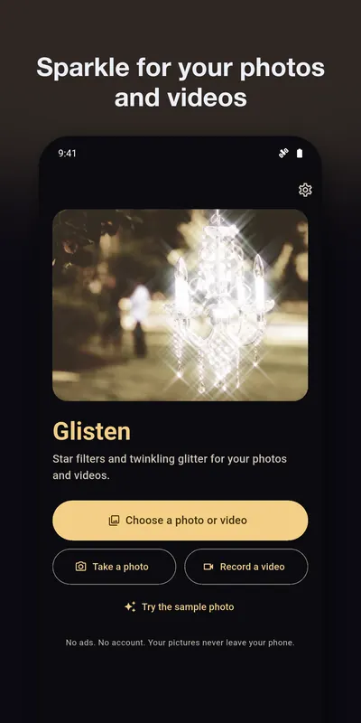
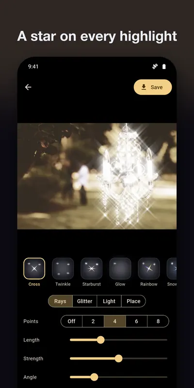
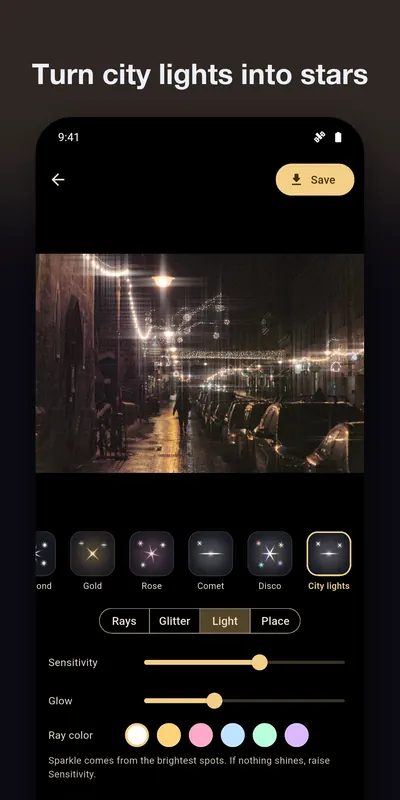
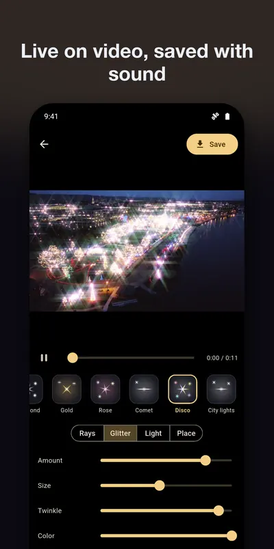
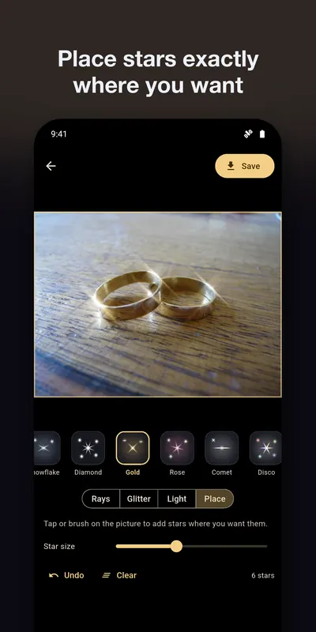

Star filter and glitter effects for your photos and videos
Glisten gives your photos and videos the look of a star filter. Lamps, gems and reflections grow crossed rays, and glitter twinkles on the brightest points. You see it live while the video plays, and everything happens on your phone.
Get it on Google Play Try it on a photo hereAndroid. Free: photos, videos up to 15 seconds in 1080p, 4 styles and every slider. Glisten Pro, one in-app purchase paid once: all 12 styles, any length, hand-placed stars, up to 4K, photos turned into twinkling videos.


The right-hand picture was made by this site's free star filter tool. The app's renderer does the same steps on your phone's graphics chip, and it also handles video. Photo: CC0, see credits.





What it does
Star rays
2, 4, 6 or 8 points on every highlight, with length, strength, angle and a rainbow fringe.Twinkling glitter
Stars that come and go on the brightest points of each frame. Set the amount, size, speed and color.Your videos, live
Pick a video from your library or shoot a new one. The effect plays with it, and the saved file keeps its sound.Stars by hand (Pro)
Tap or brush exactly where you want a star when a picture has no highlight of its own.What it works on
- Rings and jewelry. Every small glint turns into a star.
- Candles and fairy lights. Small lights on a dark background are the classic case.
- City nights and concerts. Street lamps, stage lights and reflections on wet roads.
- Weddings and holidays. Chandeliers, sequins, nails, trees full of lights.
It does less on flat daylight pictures, because they have no small bright spots to work from. How to get a star filter look, and on which photos it works.
Support
Questions, bugs, or feature requests: email contact@eastframe-technology.com. A human reads every message, usually the same day.
A short captioned walkthrough shows every feature. It was filmed on an iPhone; the Android app has the same editor.
Frequently asked
Nothing sparkles in my picture.
Sparkle comes from the brightest small spots: lamps, gems, reflections, candles. Open the Light tab and raise Sensitivity, or choose the Twinkle style. You can also place stars by hand with Glisten Pro.
Can I add sparkle to videos I already have?
Yes. Choose any photo or video from your library. You see the effect while the video plays, and the saved video keeps its sound.
What does the free version include?
Photos, videos up to 15 seconds saved in 1080p, 4 styles and every slider. Glisten Pro adds all 12 styles, videos of any length, hand-placed stars, full resolution up to 4K and photos turned into twinkling videos.
My video is long. What happens without Pro?
You can save its first 15 seconds for free, or unlock Pro to save the whole video.
Is there a subscription?
No. Glisten Pro is a single purchase. Restore it on a new phone from Settings.
Saving fails with a permission message.
Glisten needs permission to add to your photos. Allow it in your phone's Settings, then save again.
Are my photos uploaded?
No. Glisten processes them on your phone. The browser tool on this site does the same: your photo stays in your browser.
Privacy policy
Effective 2 November 2026. Glisten is published by Eastframe Technology LLC.
What we collect: nothing. Glisten has no account system, no analytics, no advertising, and no crash reporting service. It never connects to the internet and sends no data to us or anyone else.
Your photos and videos are opened only when you pick them or shoot them, and are processed entirely on your device. Glisten keeps a temporary copy while you edit and saves the result to your photo library or the app you choose in the share sheet.
Camera and microphone are used only when you choose to take a photo or record a video, through your phone's own camera screen.
Purchases are handled by the App Store or Google Play. We do not see your payment details.
Third parties. The app contains no third-party advertising or analytics code. The only external page it opens is this one, and only when you tap it.
Children. Glisten is not directed at children and collects no personal information from anyone.
Changes. A new version of this policy will be published at this address with a new effective date.
Credits
The sample photo and the store pictures are public-domain (CC0) photographs from Wikimedia Commons.
The chandelier on this site is Crystal Chandelier Garden by Amanda Kerr, CC0.
.jpg){kind=link}